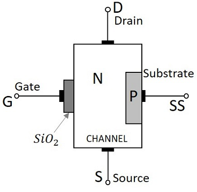

Construction:
A Metal-Oxide-Semiconductor Field-Effect Transistor (MOSFET) is a three-terminal device composed of a semiconductor material, typically silicon, with a thin layer of insulating material (oxide) on top and a metal gate electrode on the insulating layer. The MOSFET has three regions: the source, the drain, and the channel. The channel acts as a conducting path between the source and the drain.

Types:
There are two main types of MOSFETs based on the conductivity type of the channel:
1. N-Channel MOSFET (NMOS): In an NMOS transistor, the channel is composed of n-type semiconductor material. The majority carriers (electrons) flow through the channel when a voltage is applied between the source and drain terminals.
2. P-Channel MOSFET (PMOS): In a PMOS transistor, the channel is composed of p-type semiconductor material. The majority carriers (holes) flow through the channel when a voltage is applied between the source and drain terminals.
Operation:
The operation of a MOSFET involves controlling the current flow through the channel by applying a voltage at the gate terminal. The MOSFET operates in three different regions:
1. Cut-off Region: When the gate-to-source voltage (VGS) is below the threshold voltage (Vth), the MOSFET is in the cut-off region. In this region, the transistor is off, and the channel is depleted of charge carriers, resulting in negligible current flow between the source and drain.
2. Triode (Linear) Region: When VGS is above Vth, but the voltage between the drain and source (VDS) is low, the MOSFET operates in the triode region. In this region, the channel is conducting, and the current flow between the source and drain is proportional to the VGS and VDS voltages.
3. Saturation Region: When VGS is above Vth, and VDS is sufficiently high, the MOSFET enters the saturation region. In this region, the channel is fully open, and the current between the source and drain is determined by the device characteristics rather than the VDS voltage.
V-I Characteristics:

The voltage-current (V-I) characteristics of a MOSFET show how the drain current (ID) varies with the drain-to-source voltage (VDS) for different gate-to-source voltages (VGS). The V-I characteristics typically consist of three regions:
1. Cut-off Region: The MOSFET is off, and there is negligible drain current regardless of the VDS.
2. Triode (Linear) Region: The drain current increases linearly with VDS until it reaches a maximum value. The device operates as a voltage-controlled resistor in this region.
3. Saturation Region: The drain current remains relatively constant, independent of VDS. The MOSFET operates as a voltage-controlled current source, and its output is not affected by VDS variations.
MOSFET as Switch:
A MOSFET can be used as a switch by operating it in either the cut-off or saturation region. When the MOSFET is fully off (cut-off region), it blocks the current flow between the source and drain. When the MOSFET is fully on (saturation region), it allows a significant current to flow through the channel. By controlling the gate voltage, the MOSFET can be switched between these two states, making it an efficient switch for various electronic applications.
MOSFET as Amplifier:
A MOSFET can also be used as an amplifier, particularly in the saturation region. By applying an input voltage signal to the gate terminal, the MOSFET amplifies the signal at the output. The input signal causes variations